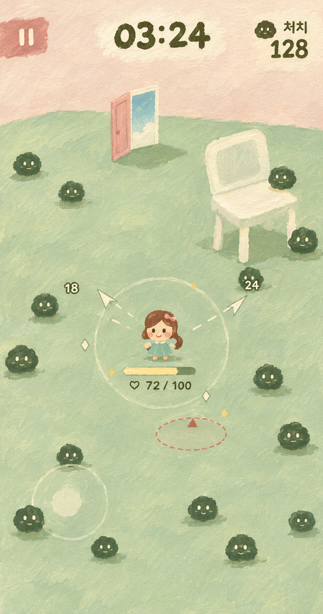
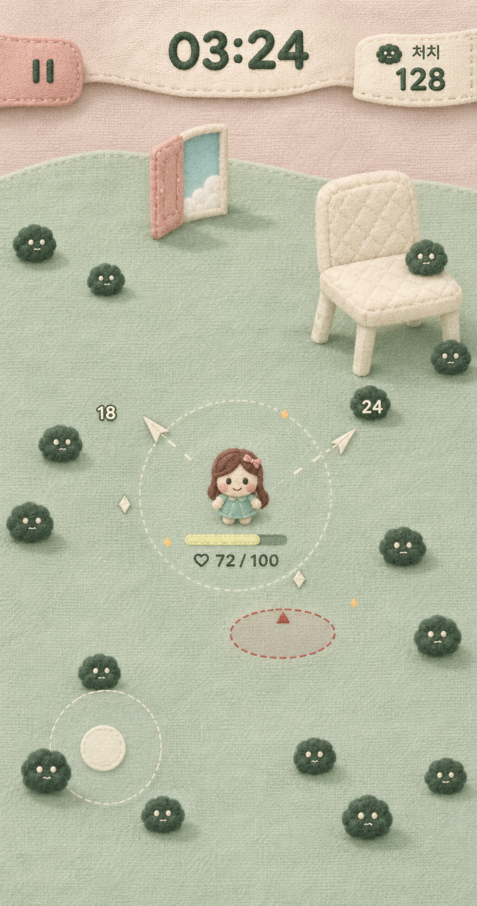
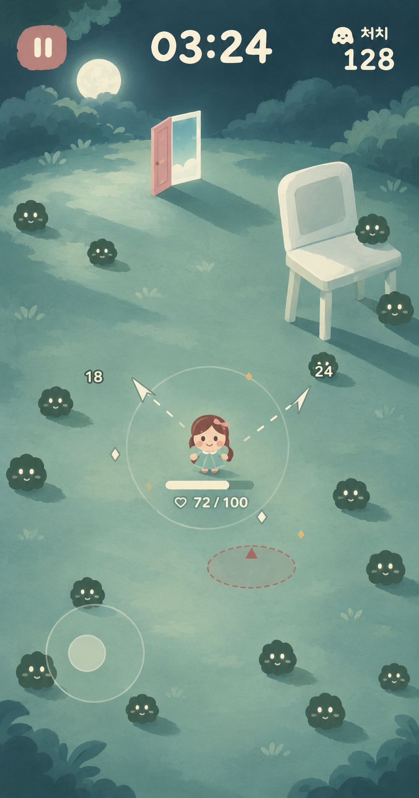

그림체와 함께 만들어지는 HUD
‘익숙하지만 이상한 꿈’의 세 가지 아트 방향. 캐릭터·장면과 UI가 같은 재료로 보이는지를 비교합니다.
종이에 그린 낮잠
배경의 붓결을 정지 표시·숫자까지 이어 쓰는 그림책 방향.

베갯속 꿈
캐릭터·가구·HUD가 모두 천과 솜으로 만들어진 방향.

달빛의 공터
달빛의 크림색을 글자와 조작부에 공유하는 밤의 동화 방향.

‘익숙하지만 이상한 꿈’의 세 가지 아트 방향. 캐릭터·장면과 UI가 같은 재료로 보이는지를 비교합니다.
배경의 붓결을 정지 표시·숫자까지 이어 쓰는 그림책 방향.

캐릭터·가구·HUD가 모두 천과 솜으로 만들어진 방향.

달빛의 크림색을 글자와 조작부에 공유하는 밤의 동화 방향.
